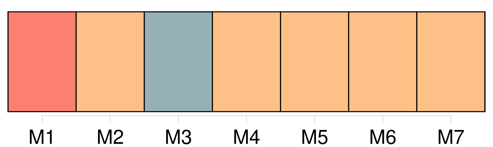
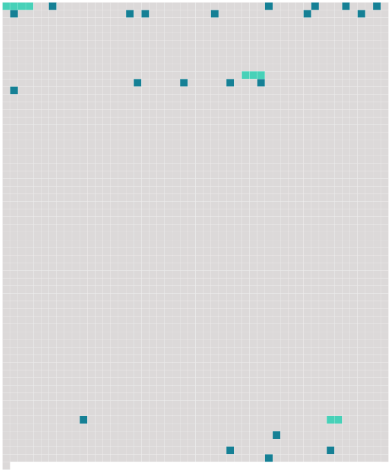

Longueur nb maillons : 24 mentions |
 |
[Une femme assez âgée] , et [qui] avait été la gouvernante de l’ ancien curé, vint aussi à notre rencontre et, après m’ avoir fait entrer dans une salle basse, me [demanda] si mon intention était de [la] garder.
Je [lui] répondis que je [la] garderais, [elle] et le chien, et aussi les poules, et tout le mobilier que [son] maître [lui] avait laissé à sa mort, ce qui [la] fit entrer dans un transport de joie, l’ abbé Sérapion [lui] ayant donné sur-le-champ le prix qu’ [elle] en voulait. [13 phrases] [La vieille gouvernante] alla ouvrir, et un homme au teint cuivré et richement vêtu, mais selon une mode étrangère, avec un long poignard, se dessina sous les rayons de la lanterne de [Barbara] Son premier mouvement fut [la] frayeur ; mais l’ homme [la] rassura, et [lui] dit qu’ il avait besoin de me voir sur-le-champ pour quelque chose qui concernait mon ministère. [Barbara] le fit monter. [72 phrases] [Barbara] s’ agitait dans la chambre avec un tremblement sénile, ouvrant et fermant des tiroirs, ou remuant des poudres dans des verres. En me voyant ouvrir les yeux, [la vieille] poussa un cri de joie, le chien jappa et frétilla de la queue ; mais j’ étais si faible, que je ne pus prononcer une seule parole ni faire aucun mouvement. [2 phrases] [Barbara] m’ a conté que le même homme au teint cuivré, qui m’ était venu chercher pendant la nuit, m’ avait ramené le matin dans une litière fermée et s’ en était retourné aussitôt. [2 phrases] Je ne pouvais croire que j’ avais rêvé, puisque [Barbara] avait vu comme moi l’ homme aux deux chevaux noirs et qu’ [elle] en décrivait l’ ajustement et la tournure avec exactitude. [2 phrases] [Barbara] lui avait mandé que j’ étais malade, et il était accouru en toute hâte. |
 |
Il est possible de télécharger la ressource sur la page Ortolang |
Si vous avez des questions ou vous voyez des erreurs, merci d'envoyer un mail à silvia.federzoni89@gmail.com |